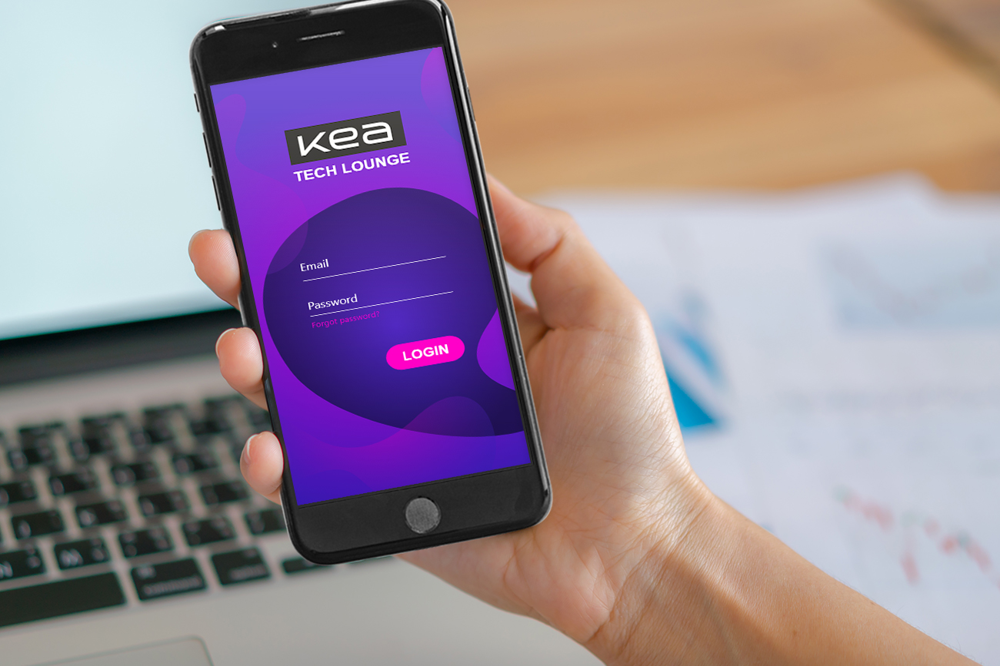

"KEA Tech Lounge" Native App XD prototype
For this project, I had the pleasure to work with Patricia, André, Demi, Luciano and Esa. The name of our group was "PADLED".
On the first day of Design Sprint, we had to choose what type of app we wanted to develop. Since the app needed to satisfy KEA's students' wish or need, making student life easier and more enjoyable, we decided to make an app for "KEA Tech Lounge".
Why exactly the KEA Tech Lounge?
Well, after the survey we conducted amongst the students and staff of the "Tech Lounge", we found that if there is such an opportunity for online booking of equipment, this will greatly facilitate students. Now it takes them very long time to book a equipment, to ask a question or whatever they whant to do, because sometimes there are too many people waiting there.
The app would encourage students to visit the "Tech Lounge" by showing them the available devices and tools, tips and ideas on how they can use them.
Most students had the wish the app to be colorful and cheerful, not to be boring, and even some of the students said it would be nice to be in a "lava lamp" style with bright, neon colors.
The phases we passed during Design Sprint are: Мap, Sketch, Decide, Prototype and Pitch.

Our team was a little confused with the design because we had split the work between several people, and later on it was hard to decide which style to stick to. We were recommended to go a step backward and to create a moodboard and a style tile and to define the style that we want. And yes, it helped! After creating them we continued with our design and prototype very easily.
You can see them here:
MoodboardStyle Tile
Here you can see the prototype that we created as a group
Native App Prototype - group PADLEDHere is my individual attempt to slightly improve the prototype, according to the feedback we had, during the presentation in class. We were recommended to face the challenge and create our own graphics instead of using someone's, that's why I created my own for the main screens. I decided to make the colors even brighter and made some other improvements. I suppose both versions have both advantages and disadvantages, so I can not say which one is better. Perhaps it is a matter of personal choice and preference. I just wanted to show another version